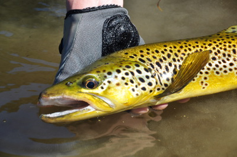
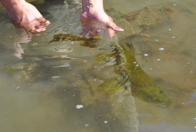
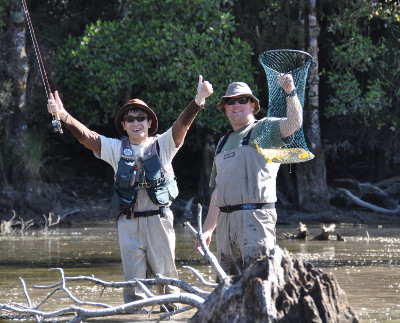
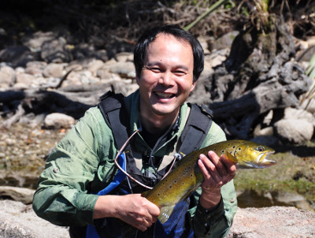

釣行日誌 ＮＺ編 「翡翠、黄金、そして銀塊」
順調に釣りは進む
2010/11/26(FRI)-2
快調に釣りが始まり、鰐部さんが遠浅の入り江で２尾目を上げた。この湖のブラウントラウトは、どれもコンディションが良く、茶色と言うよりは金色に光り輝くとても綺麗な体色をしている。鰭はどれも力強そうに大きく広がっており、ファイトのパワーも凄い。ウェストランドは本当に鱒釣りの天国だなぁと幸せになる。

鰐部さんの２尾目
僕の２尾目も遠浅のポイントで来た。あまり大きくはないので気楽に取り込んで来ると、鱒の背中が不自然に曲がっているのが見えた。どうやら奇形の鱒らしい。上半身は丸々と太っているが、アブラビレのあたりは痩せている。生まれつきのハンディキャップらしかったが、元気に生きている姿がけなげであった。そっとリリースしてやった。

背中が曲がった鱒をリリース
このあたりのポイントは有望らしかったので、ディーン君と鰐部さんが、ボートを降りて岸沿いにウェーディングしながら鱒を探しに出かけた。遠くで見ていると、鰐部さんが今日の３尾目を掛けてファイトしている。周辺の障害物を避けながら、上手に魚をいなして寄せてくると、ディーン君がすかさずネットにすくい上げた。

ガッツポーズ、やったね！
入り江の奥に岩盤があるポイントで、僕の３尾目が来た。鰐部さんのタックルは、リールが右手巻きなので、僕にも使いやすかった。余裕を持ってリールファイトを行い、鱒を寄せてくる。ディーン君の大きなネットにすっぽりと収まった鱒は、中型で、斑点の少ない、ヌメッとした体色のブラウンであった。鰐部さんが望遠レンズで写真を撮ってくれた。最高の笑顔となった。

最高の笑顔
釣行日誌ＮＺ編 目次へ
サイトマップ
ホームへ
お問い合わせ